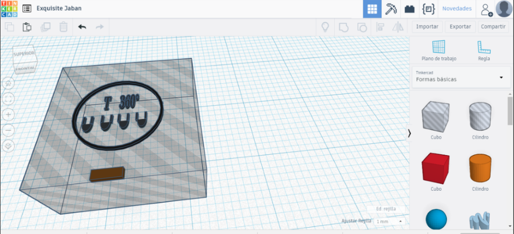

Presentación del proyecto preliminar
Configuración de software
Al momento de abrir el programa procederemos a insertar nuestra figura o diseño que innovamos y luego modificar a sus dimensiones correctas y poder apreciar el entorno del programa.
Cada uno de estos iconos nos ayudara a tener mejores dimensiones las cuales son:
Podremos ajustar la visión de conjunto
Podremos modificar de manera más rápida y eficiente.
Veremos el modelo de impresora a utilizar
Permitirá elegir el extrusor que utilizaremos de un filamento ABS
Podemos cambiar de vista para una mejor visualización.
Permite girar el objeto en los ejes X, Y, Z.
Permite cambiar el tamaña del objeto.

Luego de haber modificado iremos a exportar nuestro diseño, nos vamos a la opción “Export”, ésta función dará una vista preliminar de la impresión datos como el tiempo que transcurrirá, la cantidad de filamento a utilizar y la cantidad de capas que realizará.

Una vez exportado colocaremos el archivo en una memoria USB ya que la forma de enviar archivos (por ahora) a la impresora es por tarjeta SD y guardamos.

Diseño de la caja
Usamos el programa tinkercad para modelar nuestra caja
Logotipo
Nombre